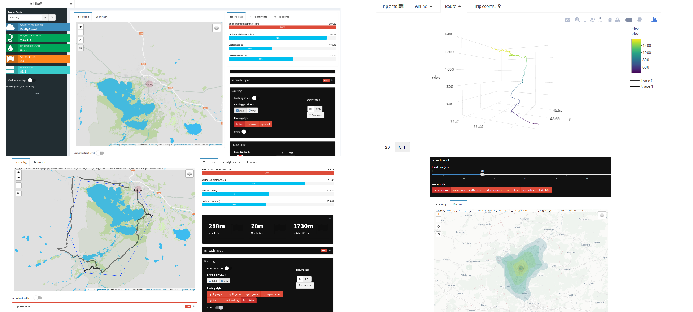

#GIS-Day — 14 November, 2018
Überblick
Inhalt
Was ist hikeR:
- hikeR Features
- hikeR Services
Struktur der Anwendung:
- ShinyApp + R-Paket
Ausblick:
- Neue Features
- Server + Maintaince
hikeR Features
- Routing
- Routing Stats.
- Download
- Anbieter/Style
- Wetter
- Wetter & Wetterwarnungen
- InReach
- Impressions
hikeR Features

hikeR Features
Routing
- ORS- OpenRouteService openrouteservice.org
- Heidelberg Institute for Geoinformation Technology (HeiGIT) (Entwicklung und Betreuung)
- Directions, geocode, isochrones, time-distance matrix, pois
- R-Paket:
openrouteserivce-r- github.com/GIScience/openrouteservice-r
- cyclestreet cyclestreets.net
- CycleStreets Ltd, a not-for-profit limited UK company - Cambridige Cycling Campaign
- OSM + OpenCycleMap
- R-Paket
stplanr- https://github.com/ropensci/stplanr -> Directions, geocode
hikeR Features
Routing
- profile ?
- Fahrrad:
- fast, balanced, quite (cycle)
- regular, safe, street, mountain (ors)
- Zu Fuss:
- hiking, walking (ors)
- als Standard auch OSM möglich
hikeR::hike_routing(coord_list, progress, provider, profile,api)
hikeR Features
Routing Statistik
- Luftlinie oder berechnete Strecke
- Höheninformation + 3D Höhendiagramm
- Reisezeit
- Leistungskilometer:
hike_performance_km(elev_points, col, tmp_route)
Demo
Routing und Routingstatistik
hikeR Features
Wetter und Wetterwarnungen
- Einfaches Wetter:
weatherr- Paket (api.met.no)- weltweit verfügbare Grundwetterdaten von Norwegian Meteorologisk Institutt
- Update: nach Erstellung Luftlinie, Route oder Suche
- Wetterwarnungen:
sf::st_read( "WFS:https://maps.dwd.de/geoserver/ows?service=wfs&version=2.0.0&request=GetCapabilities", layer = "dwd:Warnungen_Gemeinden", quiet = T)
- Bsp. aus
hikeR::hike_warnungen() - nur für Dtl., auf Gemeindeebene – Quelle WFS des DWD dwd.de/DE/leistungen/geowebservice/geowebservice.html
- Bsp. aus
hikeR Features
InReach & Impressionen
- ORS Isochronen-Dienst (openrouteservice-r) – https://openrouteservice.org/services/
hike_iso_create <- function(x,y,range,profile){ range <- range*60 t <- c(x,y) iso <- openrouteservice::ors_isochrones(t,range = range, profile = profile, interval = range/4, range_type = "time") sf <- hikeR::hike_iso2sf(iso) return(sf) }- Impressionen
- nutzt Wikipedia + (initialen) Suchbegriff – scraped Wikidata nach .jpges & .png
Demo
Wetter, InReach, Impressionen
hikeR Struktur
Was ist Shiny ?
- R-Package für das entwickeln von interactiven Standalone Apps
- Kombiniert die stat./numerische Vorzüge von R mit interaktiven Elementen
- erweiterbar/ integriebar mit R-Markdown, CSS, HTML und JS
- Backend + Frontend in R – Einsteigerfreundlich
- shiny.rstudio.com
- Beispiel: https://shiny.rstudio.com/gallery/
- Tutorials: https://shiny.rstudio.com/tutorial/

Warum ist R/Shiny ?
JS und numerische Operationen
'5' + 3 // '53' '5' - 3 // 2 1+'1' - '1' // 10 sum(2,2) // TypeError [6,-2,-7].sort() // [-2,-7, 6]

Warum R/Shiny ?
Offene Software R:
- spatial libraries: SF,Leaflet, MapView, RGEOS
- r-spatial.org
- visual libraries: ggplot, plotly, shinydashboards
- Data Handling: tidyverse, data.table
- tidyverse.org
- services libraries: stplanr, openrouteservice-r, weatherr
- WebDev (ShinyApp) kurze Entwicklungszeit , R-only
- → Shiny erleichtert Einstiegshürde
Struktur
R-Pakete + ShinyApp

Warum R/Shiny ?
- Spaß am programmiere
- Was ist möglich mit R/Shiny → welche GIS-Fähigkeiten gibt es?
- kontinuierlich gewachsen
Ausblick
- Neue Features:
- Routenhistory (Session basiert)
- Autom. Rundtouren
- Wegplan als PDF
- …
- System
- neuer Server – Dockerisierung der Anwendung
- Modularisierung fortsetzen
- Code review – überarbeiten/ verbesseren
- Dokumentation
- Wartung
Zusammenarbeiten
- Hilfe/ Ideen / Unterstützung jeglicher Art erwünscht!
- Zusammenarbeit über github: github.com/EricKrg/hikeR
- forken –> pull request
- oder bei Interesse: eric.krueger@uni-jena.de

Danke für die Aufmerksamkeit!
Fragen ?